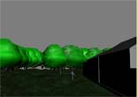
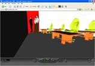

| |
Simulating
and Modeling of Bowie State University's Library for Navigation |
 |
The main goal of this application is
to aid the visitors and to present VR as a tool for educational
and training. This project presents the simulation and modeling
of a Bowie State University library building in a virtual
environment. The development of virtual reality environment
makes it possible for a user to understand and observe multiple
paths that an agent would observe during navigation and evacuation.
This environment can be used via the web or through a physical
kiosk placed at the entrance of the building. This application
can also be used to simulate the evacuation behavior inside
the building. |
| |
|
| |
Educational
Virtual Learning Environment/ Virtual Professor's Classroom |
 |
This project presents a virtual lecture
hall that is similar to second life. TheVR environment could
be used as an actual virtual classroom where students and
teachers can interact with each other. The online virtual
classroom can be devloped so that students can interact with
each other and study together. Teachers can also use this
mode for delivering lectures in an online virtual environment.Future
work invloves adding a chat mode in the VRML environment. |
| |
|
| |
Battlefield
Scenario Simulation |
|  |
This project presents simulation of Battlefield
of Waterloo that was fought on June 18, 1815 (old environment)
between French vs. Russian and British armies battling after
it finished raining (Very damp and muddy ground).Reconstruction
of historical sites is one of the main domains in which VR
has been applied extensively for two main reasons. First,
what remained from many of these sites is nothing but a tour
site with many years of landscape changes. The only way to
provide the visitors with views of how the site would look
like during 1815 is to recreate scenes from different perspectives
and locations of the real site. Secondly, by providing VR
tours of a remote site, one can access and view the historical
place using his own computer while staying home and without
even spending a penny. |
| |
|
| |
Evacuation
Simulation |
|  |
This project presents evacuation simulation
of a school building using virtual reality. It is well known
that crowd stampede is one of the most disastrous forms of
collective behavior caused due to panic. It leads to fatalities
as people get trampled and crushed as they fall. The application
presents a school building environment with several classrooms
with students, teachers, chairs, televisions, walls, doors
and tables.This simulation aims to aid the visitors in navigation
within the building. |
| |
|